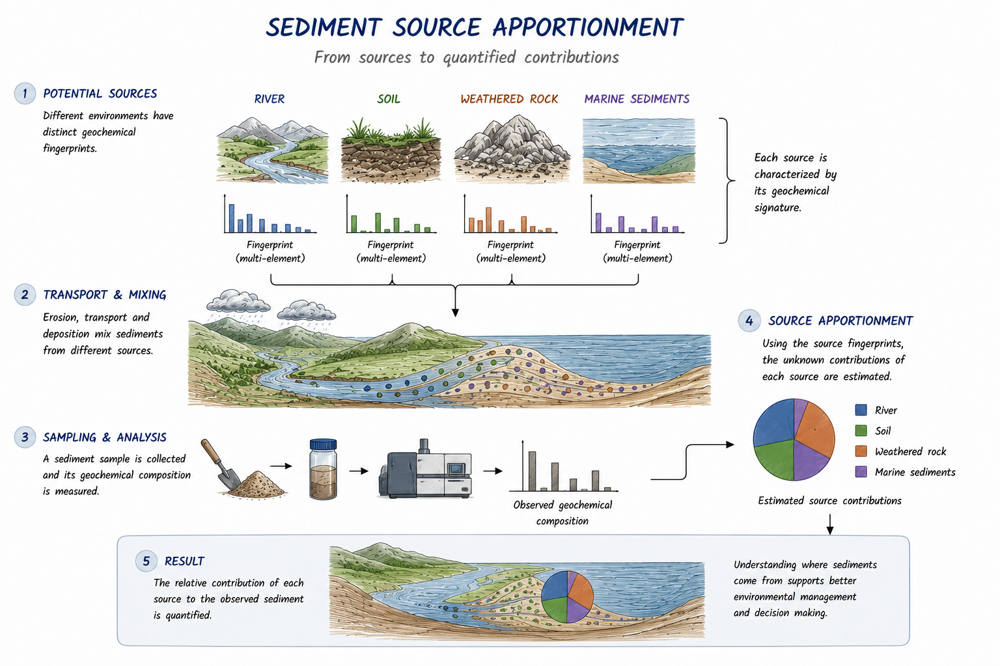
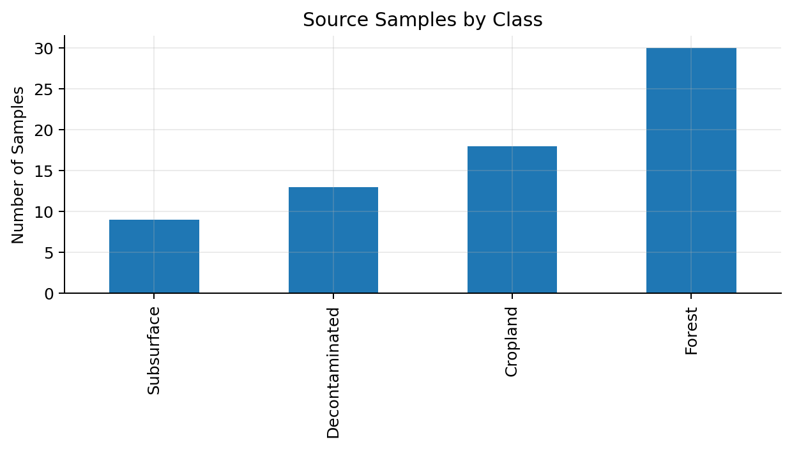
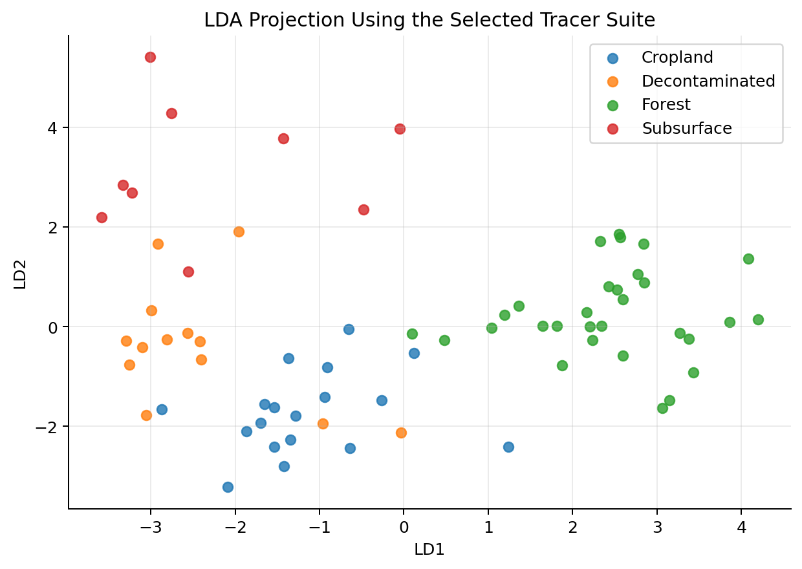
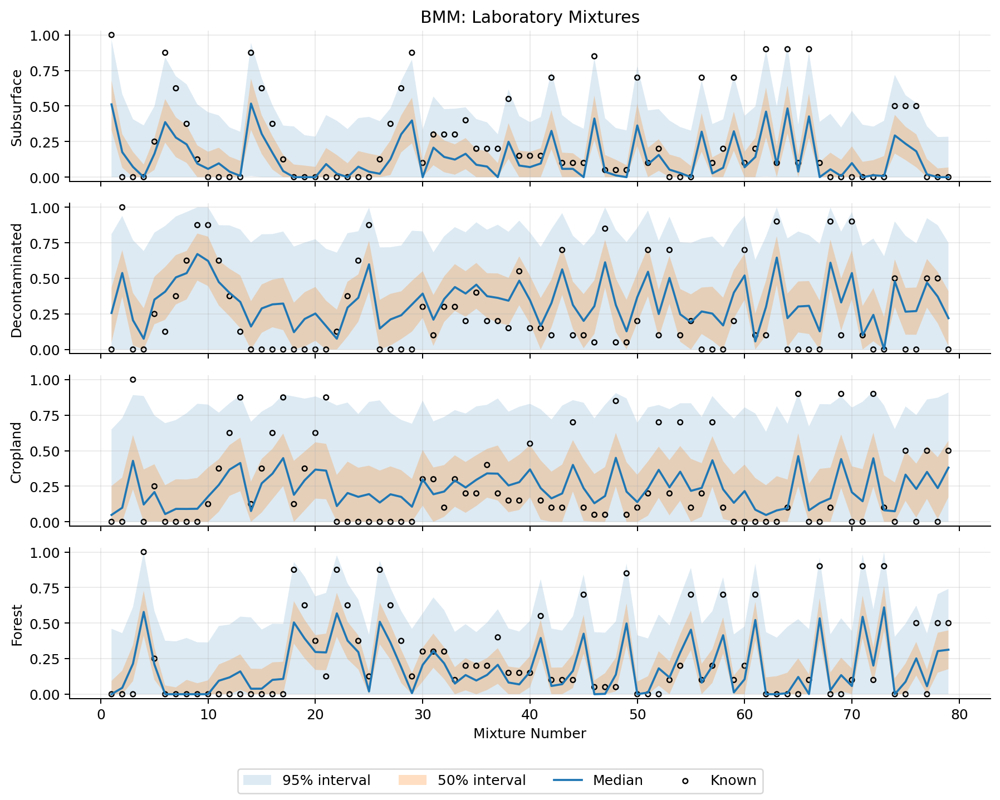
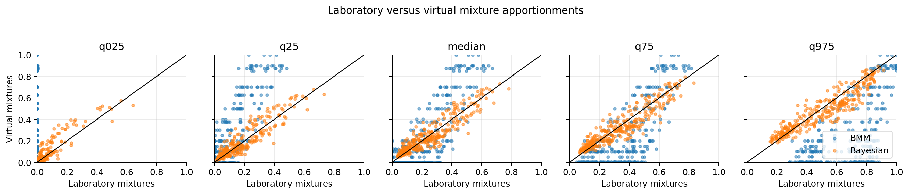
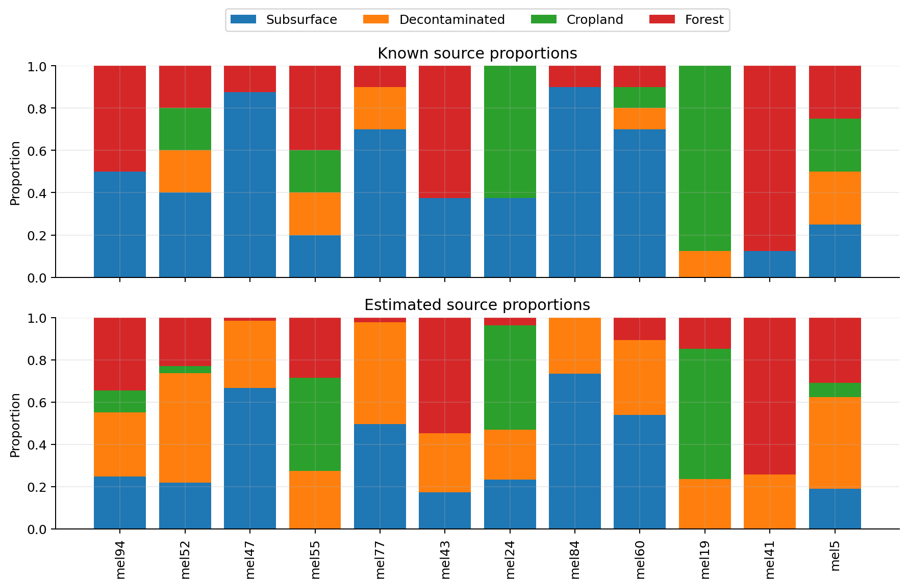
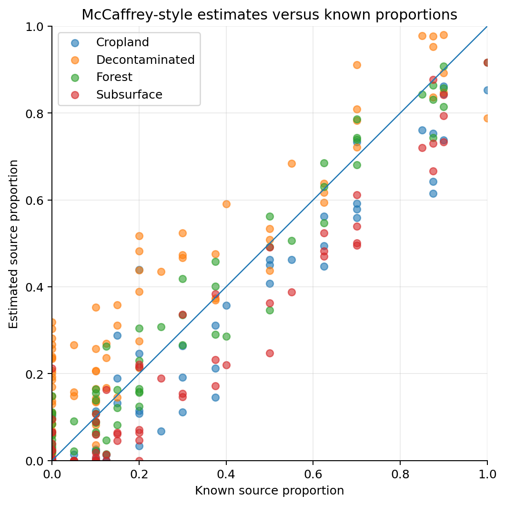
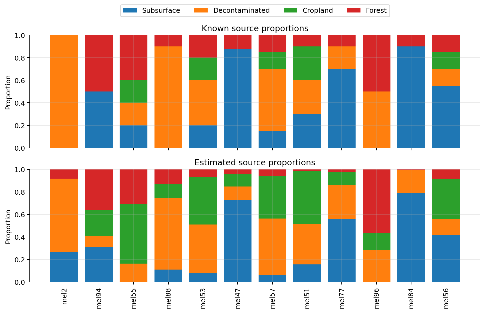
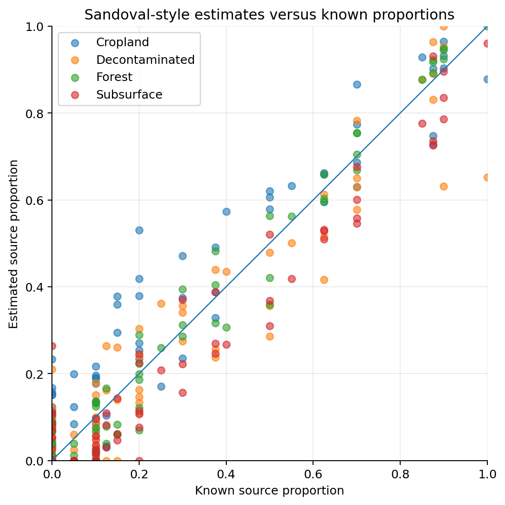
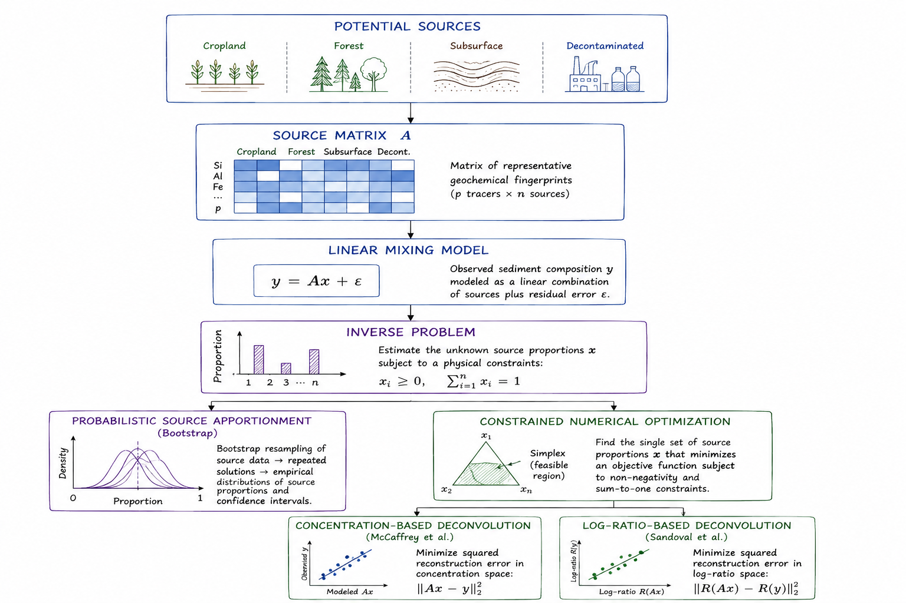

7 Sediment Source Modeling
Sediment source apportionment aims to estimate how much each potential source contributes to the sediment collected at a downstream location. The problem arises in watershed management, erosion assessment, and river restoration, where understanding the origin of transported sediments is often more important than simply measuring their volume.
This project compares three complementary source apportionment approaches using laboratory mixtures with known compositions and synthetic mixtures generated from the same experimental dataset. Alongside a probabilistic fingerprinting model, two deterministic geochemical deconvolution algorithms originally developed for petroleum production allocation are adapted to sediment source apportionment, allowing their performance to be evaluated under controlled conditions.
7.1 Problem Definition
Sediments transported through a watershed are typically generated by multiple erosion processes acting simultaneously. Agricultural fields, forested areas, channel banks, and other landscape units may all contribute material to the sediment ultimately deposited downstream. Although the resulting mixture can be sampled directly, the relative contribution of each source cannot be measured independently, making source apportionment an inverse problem.
A common strategy is to characterize each potential source using a set of geochemical tracers and compare these fingerprints with those measured in the collected sediment. If the selected tracers are sufficiently discriminative, the observed composition can be interpreted as the result of combining material from multiple sources in unknown proportions. The objective is therefore to estimate a vector of source proportions that reproduces the measured composition while satisfying the physical constraints of the mixing process.
The overall source apportionment workflow is illustrated in Figure 7.1. Representative geochemical signatures are first collected from potential sediment sources, which subsequently mix during erosion, transport, and deposition. After sampling and laboratory analysis, the measured composition is used to estimate the relative contribution of each source to the final mixture.

Several factors make this estimation challenging. Geochemical signatures from different sources often overlap, laboratory measurements are subject to analytical uncertainty, and the number of available tracers is usually limited. Moreover, the estimated source proportions must remain non-negative and sum to one, introducing additional constraints that distinguish the problem from an unconstrained regression task.
One of the main difficulties when assessing source apportionment methods is that the true source proportions are rarely known for field observations. As a result, performance is often evaluated indirectly through sensitivity analyses or expert interpretation. To overcome this limitation, Batista, Laceby, and Evrard [1] proposed an experimental framework based on laboratory-prepared sediment mixtures with known source proportions. Because the true composition of each mixture is available, different modelling approaches can be evaluated objectively using quantitative performance metrics.
This project adopts that experimental framework and compares three complementary source apportionment methods using the same benchmark dataset. In addition to the laboratory mixtures, the evaluation also includes a large collection of synthetic mixtures generated from the experimental data, allowing model behaviour to be examined over a much broader range of source combinations while preserving complete knowledge of the ground truth.
7.2 Modeling Approach
At first glance, sediment fingerprinting and petroleum production allocation appear to address entirely different scientific problems. The former seeks to determine the origin of sediments transported through a watershed, whereas the latter estimates the contribution of individual reservoirs to a commingled production stream. Despite these differences, both can be formulated as the same inverse problem: recovering the proportions of multiple sources from a compositional mixture subject to physical constraints.
This shared mathematical structure motivated the comparison presented in this chapter. Rather than proposing a new source apportionment algorithm, the objective is to evaluate whether deconvolution methods that have been successfully applied in petroleum geochemistry can also recover sediment source proportions from environmental fingerprinting data. Laboratory-prepared mixtures with known compositions provide an ideal benchmark because every prediction can be compared directly with the true proportions.
The first method considered is the Bootstrapped Mixing Model (BMM) described by Batista, Laceby, and Evrard [1]. This probabilistic framework repeatedly resamples the geochemical observations to propagate measurement variability through the mixing model, producing a distribution of plausible source proportions instead of a single deterministic estimate. Because it explicitly represents uncertainty, the BMM serves as a natural reference against which alternative approaches can be evaluated.
The remaining methods originate from petroleum geochemistry. McCaffrey et al. (2011) [2] formulated the allocation problem as a constrained least-squares optimization, estimating the unknown source proportions directly from elemental concentrations while enforcing non-negativity and mass conservation. Sandoval et al. (2022) [3] later extended this idea by performing the estimation in log-ratio space, an approach specifically designed for compositional data that mitigates numerical issues associated with the constant-sum constraint and improves the treatment of relative geochemical information.
Although neither deterministic model was originally developed for sediment fingerprinting, both rely on assumptions that remain valid for conservative geochemical tracers. Consequently, applying them to sediment source apportionment requires no modification of their mathematical formulation, only a reinterpretation of what constitutes a “source.” In petroleum applications, the sources correspond to producing reservoirs, whereas in this study they represent sediment-producing landscape units.
To ensure that differences in performance arise from the modelling strategies rather than the data themselves, all three methods are evaluated using exactly the same benchmark datasets. Their estimates are then compared against the known source proportions, providing a controlled assessment of accuracy, robustness, and the practical advantages and limitations of each formulation.
7.3 Methodology and Implementation
The implementation was organized as three independent workflows, one for each modelling approach. This separation was intentional: each model uses a different representation of the mixing problem, different assumptions about uncertainty, and different diagnostic outputs. Keeping the workflows independent makes the comparison easier to audit and avoids forcing the three methods into a single artificial pipeline.
All methods are evaluated using the same sediment fingerprinting dataset and the same known source proportions. Consequently, any differences in performance arise from the modelling formulation rather than from changes in the input data. This distinction is particularly important because the objective is not only to obtain accurate source apportionments, but also to understand how each formulation behaves when applied to the same controlled mixtures.
7.3.1 Bootstrapped Mixing Model
The Bootstrapped Mixing Model (BMM) serves as the probabilistic baseline throughout this study. Unlike deterministic mixing models that produce a single estimate of the source proportions, the BMM propagates measurement uncertainty through repeated bootstrap resampling. The result is not only an estimate for each sediment source, but a distribution of plausible solutions for every mixture.
The implementation follows the evaluation framework proposed by Batista, Laceby, and Evrard [1]. The workflow begins by examining the available source fingerprints, then selects the tracers with the strongest discriminatory power, and finally estimates the source proportions for both laboratory-prepared and synthetically generated benchmark mixtures.
A complete Python implementation of the Bootstrapped Mixing Model presented in this section is available in the companion notebook here.
7.3.1.1 Exploratory Analysis
Before fitting the mixing model, the source data were inspected to verify that each sediment class was adequately represented and that the candidate geochemical tracers carried sufficient discriminatory information. This step is important because source apportionment depends on separating source signatures rather than simply reproducing a numerical mixture.
Figure 7.2 summarizes the number of samples available for each sediment source. Although the sampling effort is not perfectly balanced, every class contains enough observations to characterize source variability and support the bootstrap resampling procedure.

Candidate tracers were screened using the non-parametric Kruskal–Wallis test. The retained variables, listed in Table 7.1, show statistically significant differences among the four source classes and were therefore selected for the subsequent source apportionment analysis.
| Tracer | H Statistic | p-value |
|---|---|---|
| L | 51.647 | 3.56e-11 |
| h | 45.480 | 7.32e-10 |
| Si | 43.607 | 1.83e-09 |
| C* | 34.421 | 1.61e-07 |
| K | 33.015 | 3.20e-07 |
| Y | 23.563 | 3.08e-05 |
| Mn | 13.278 | 4.07e-03 |
| Zn | 12.499 | 5.86e-03 |
| Ti | 9.213 | 2.66e-02 |
The selected tracer set was also examined through Linear Discriminant Analysis. As shown in Figure 7.3, most source classes occupy distinct regions of the projected feature space, although some overlap remains. This behaviour is expected in environmental fingerprinting studies and further supports the use of a probabilistic framework rather than a purely classificatory approach.

7.3.1.2 Source Apportionment
The selected tracers were then used to estimate the source proportions for both the laboratory-prepared and synthetic benchmark mixtures. For each sample, the BMM returns predictive intervals that quantify the uncertainty associated with every estimated proportion.
The laboratory results are presented in Figure 7.4. In most cases, the known source proportions fall within the predicted intervals, indicating that the model captures the main structure of the mixing process while appropriately representing the uncertainty arising from overlapping source fingerprints.

The same procedure was subsequently applied to the synthetic benchmark. As shown in Figure 7.5, predictive performance improves substantially when evaluated on these mixtures, which provide a more systematic coverage of the compositional space than the smaller laboratory dataset.

The overall performance metrics reported in Table 7.2 confirm this pattern. The laboratory mixtures exhibit wider predictive intervals and larger reconstruction errors, whereas the synthetic benchmark is reconstructed almost exactly. This difference should not be interpreted as a limitation of the method, but rather as a consequence of the evaluation protocol: the laboratory mixtures retain the full variability of experimentally measured samples, while the synthetic dataset provides a more regular and controlled benchmark.
| Dataset | P50 | P95 | W50 | W95 | MAE50 | MAE95 | CRPS | HR95 |
|---|---|---|---|---|---|---|---|---|
| Laboratory | 0.424 | 0.962 | 0.278 | 0.676 | 0.046 | 0.001 | 0.103 | 1.000 |
| Synthetic | 0.978 | 1.000 | 0.0001 | 0.0013 | 0.0000 | 0.0000 | 0.00003 | 1.000 |
The source-level metrics reported in Table 7.3 provide a more detailed view of where uncertainty remains. Cropland and Decontaminated areas exhibit wider 95% predictive intervals than Forest and Subsurface soils, suggesting that their geochemical signatures are more difficult to distinguish. Even so, coverage remains consistently high across all four source classes, making the BMM an effective probabilistic reference against which the deterministic approaches can be compared.
| Source | Mean CRPS | Median Absolute Error | 95% Coverage | 95% Width |
|---|---|---|---|---|
| Cropland | 0.115 | 0.118 | 0.962 | 0.801 |
| Decontaminated | 0.118 | 0.194 | 0.987 | 0.825 |
| Forest | 0.081 | 0.088 | 0.987 | 0.584 |
| Subsurface | 0.098 | 0.082 | 0.911 | 0.494 |
7.3.2 McCaffrey Constrained Least-Squares Model
The second approach adapts the constrained least-squares formulation proposed by McCaffrey et al. [2] for production allocation in commingled oil and gas reservoirs. Rather than estimating a distribution of plausible source proportions, this method seeks a single solution that best reproduces the measured geochemical composition while satisfying the physical constraints of the mixing process. The estimated proportions are therefore constrained to remain non-negative and to sum to one, ensuring that every solution is physically interpretable.
Although originally developed for petroleum production allocation, the mathematical formulation is directly applicable to sediment fingerprinting. In both cases, the observed sample represents a mixture of multiple sources with unknown proportions, and the objective is to recover those proportions from a set of conservative geochemical tracers. This shared mathematical structure makes the McCaffrey formulation a natural deterministic alternative to the probabilistic Bootstrapped Mixing Model.
A complete Python implementation of the McCaffrey constrained least-squares model presented in this section is available in the companion notebook here.
7.3.2.1 Representative Source Signatures
Unlike the Bootstrapped Mixing Model, which explicitly propagates measurement uncertainty through repeated resampling, the McCaffrey formulation requires a single representative geochemical signature for each sediment source. These signatures were obtained by aggregating the available observations from each source and subsequently scaling the retained tracers to comparable numerical ranges before solving the constrained optimization problem.
The resulting scaling factors are summarized in Table 7.4.
| Tracer | Scaling Factor |
|---|---|
| L | 3.940 |
| h | 4.311 |
| Si | 12.271 |
| Zn | 4.902 |
| Mn | 6.847 |
| Ti | 7.614 |
| K | 8.520 |
| C* | 5.178 |
| Y | 5.096 |
After estimating the source proportions, the representative compositions can be reconstructed and compared with their known values. As shown in Figure 7.6, the reconstructed signatures closely reproduce the observed geochemical fingerprints, indicating that the optimization successfully captures the dominant characteristics of each sediment source.

7.3.2.2 Source Apportionment
The constrained least-squares model was subsequently applied to every laboratory mixture included in the benchmark dataset. The estimated source proportions are compared with the known values in Figure 7.7. Most predictions lie close to the one-to-one reference line, suggesting that the deterministic optimization captures the overall mixing behaviour despite the absence of an explicit uncertainty model.

Overall performance is summarized in Table 7.5. The model achieves a mean absolute error of approximately 0.08, an RMSE of 0.11, and a Nash–Sutcliffe efficiency close to 0.87. In addition, the dominant sediment source is correctly identified for more than 83% of the evaluated mixtures, demonstrating that the deterministic formulation preserves most of the information required for practical source attribution.
| Metric | Value |
|---|---|
| Mean Absolute Error (MAE) | 0.0793 |
| Root Mean Squared Error (RMSE) | 0.1086 |
| Nash–Sutcliffe Efficiency (NSE) | 0.8683 |
| Dominant Source Accuracy | 0.8354 |
| Mean Aitchison Distance | 16.6797 |
The aggregated metrics conceal some differences between sediment sources. As shown in Table 7.6, Forest and Cropland exhibit the smallest prediction errors, whereas the Decontaminated source shows the largest bias. This behaviour is consistent with the greater overlap between some geochemical fingerprints observed during the exploratory analysis.
| Source | MAE | RMSE | Mean Error |
|---|---|---|---|
| Subsurface | 0.0768 | 0.1037 | -0.0601 |
| Decontaminated | 0.1234 | 0.1517 | 0.1106 |
| Cropland | 0.0693 | 0.0975 | -0.0532 |
| Forest | 0.0478 | 0.0625 | 0.0028 |
Compared with the probabilistic BMM, the McCaffrey model sacrifices uncertainty quantification in exchange for a considerably simpler optimization procedure and a single deterministic estimate for each mixture. This trade-off does not necessarily represent a limitation; in many industrial applications, a stable point estimate is preferable when uncertainty intervals are not required for operational decision-making.
7.3.3 Sandoval Ratio-Based Mixing Model
The final approach implements the ratio-based constrained deconvolution model proposed by Sandoval et al. [3]. Although it addresses the same source apportionment problem as the McCaffrey model, it adopts a different representation of the geochemical data. Instead of comparing elemental concentrations directly, the optimization is performed using log-ratios between tracers, reducing the influence of the constant-sum constraint that characterizes compositional datasets.
This formulation is particularly attractive for geochemical applications because many analytical measurements are inherently relative rather than absolute. By expressing the observations as ratios, the optimization focuses on the proportional relationships between tracers instead of their individual magnitudes, making the solution less sensitive to scaling effects and compositional closure.
A complete Python implementation of the Sandoval ratio-based mixing model presented in this section is available in the companion notebook here.
7.3.3.1 Representative Source Signatures
As in the McCaffrey formulation, a representative fingerprint was first constructed for each sediment source. These reference signatures were subsequently transformed into a log-ratio representation before solving the constrained optimization problem.
The tracer-specific scaling factors used during preprocessing are summarized in Table 7.7.
| Tracer | Scaling Factor |
|---|---|
| L | 51.728 |
| h | 74.501 |
| Si | 214014.572 |
| Zn | 135.606 |
| Mn | 972.318 |
| Ti | 4696.537 |
| K | 2784.897 |
| C* | 3.657 |
| Y | 5.830 |
The reconstructed representative compositions are compared with the observed source fingerprints in Figure 7.8. Despite operating in log-ratio space, the model accurately reproduces the characteristic geochemical signatures of the four sediment sources, indicating that the transformation preserves the relevant compositional information.

7.3.3.2 Source Apportionment
After calibration, the ratio-based model was applied to the laboratory mixtures using the same benchmark dataset employed for the previous methods. The estimated source proportions are compared with the known values in Figure 7.9. Most predictions remain close to the one-to-one reference line, indicating that the log-ratio formulation successfully recovers the dominant source proportions while maintaining numerical stability throughout the optimization.

The overall performance metrics are summarized in Table 7.8. Compared with the McCaffrey formulation, the ratio-based model achieves lower prediction errors, a higher Nash–Sutcliffe efficiency, and a modest improvement in dominant source identification. The average Aitchison distance also decreases, suggesting that representing the mixtures in log-ratio space provides a more appropriate description of compositional differences.
| Metric | Value |
|---|---|
| Mean Absolute Error (MAE) | 0.0620 |
| Root Mean Squared Error (RMSE) | 0.0864 |
| Nash–Sutcliffe Efficiency (NSE) | 0.9166 |
| Dominant Source Accuracy | 0.8481 |
| Mean Aitchison Distance | 14.3363 |
| Mean Ratio Objective | 0.00143 |
The source-level results presented in Table 7.9 provide a more detailed perspective on model performance. Forest exhibits the smallest reconstruction error, whereas Cropland remains the most challenging source to estimate accurately, consistent with the overlap observed during the exploratory analysis.
| Source | MAE | RMSE | Mean Error |
|---|---|---|---|
| Subsurface | 0.0656 | 0.0866 | -0.0384 |
| Decontaminated | 0.0609 | 0.0909 | -0.0151 |
| Cropland | 0.0799 | 0.1055 | 0.0515 |
| Forest | 0.0415 | 0.0545 | 0.0019 |
One practical advantage of the Sandoval formulation is that it naturally accommodates the relative nature of geochemical measurements without increasing the complexity of the optimization procedure. While both deterministic approaches produce comparable source apportionments, the log-ratio representation provides a measurable improvement in reconstruction accuracy and compositional consistency, making it the strongest deterministic performer among the three methods evaluated in this study.
7.4 Results, Discussion, and Limitations
Although the three source apportionment methods were developed from different modelling philosophies, all successfully recovered the source proportions of the benchmark mixtures. This agreement is perhaps the most important outcome of the study. Rather than demonstrating the superiority of a particular algorithm, it shows that the underlying inverse problem is sufficiently well posed to admit multiple valid formulations. Whether approached through probabilistic resampling, constrained least-squares optimization, or log-ratio deconvolution, the essential objective remains the same: identifying the combination of source proportions that best explains the measured geochemical composition while satisfying the physical constraints of the mixing process.
The Bootstrapped Mixing Model provides the richest representation of the problem by explicitly accounting for uncertainty. Instead of producing a single estimate, it generates confidence intervals that reflect both analytical variability and the natural overlap between source fingerprints. This additional information is particularly valuable when the estimated proportions are intended to support environmental interpretation, where understanding the confidence associated with a prediction is often as important as the prediction itself. The price for this richer representation is a more computationally intensive workflow that requires repeated resampling and optimization.
The deterministic formulations approach the problem from a different perspective. By directly solving a constrained optimization problem, they produce a single physically consistent estimate for each sediment mixture without explicitly modelling uncertainty. This considerably simplifies the computational workflow while preserving the physical constraints that define a valid compositional mixture.
Between the two deterministic approaches, the ratio-based formulation proposed by Sandoval et al. consistently achieved the strongest overall performance. Although both methods rely on the same optimization principles, representing the observations in log-ratio space reduces the influence of compositional closure and places greater emphasis on the relative relationships between tracers. The resulting improvements in reconstruction accuracy are modest but consistent across the evaluation metrics, suggesting that explicitly accounting for the compositional nature of the data provides a measurable practical advantage.
Perhaps the most interesting outcome of the comparison lies beyond the numerical results themselves. The two deterministic methods were originally developed for petroleum production allocation, yet they required remarkably few conceptual modifications before being applied to sediment fingerprinting. The optimization problem, the governing constraints, and the mathematical formulation remain essentially unchanged; only the interpretation of the sources differs. Reservoirs contributing to a commingled production stream become sediment-producing landscape units, while reservoir geochemical fingerprints become sediment fingerprints. This demonstrates that many inverse problems share a common mathematical structure despite arising in entirely different scientific domains.
Several limitations should nevertheless be acknowledged. The evaluation is based on laboratory-prepared mixtures and synthetically generated benchmark datasets, where the true source proportions are known exactly. While these datasets provide an objective basis for comparing competing methods, natural catchments often exhibit greater spatial variability, temporal changes in source composition, and additional measurement uncertainty that cannot be fully reproduced under controlled experimental conditions. Furthermore, all three methods assume that the selected tracers behave conservatively during erosion, transport, and deposition. Processes that preferentially alter or fractionate individual tracers could violate this assumption and reduce the reliability of the estimated proportions.
Overall, the results indicate that no single method is universally preferable. The Bootstrapped Mixing Model is the natural choice when uncertainty quantification is an essential component of the analysis, whereas the deterministic formulations provide simpler and computationally efficient alternatives when a single robust estimate is sufficient. Among these, the ratio-based model offers the best balance between numerical stability and predictive accuracy.
Beyond the comparison itself, this project illustrates a broader principle that appears repeatedly throughout this portfolio. Effective data science is often less about developing entirely new algorithms than about recognizing when an existing mathematical formulation can be transferred to a different domain. Once the underlying structure of a problem has been identified, methodologies developed for one application can often provide effective solutions to another with only minor adaptations. In this study, techniques originally designed for petroleum production allocation proved equally capable of solving a sediment source apportionment problem, highlighting the value of focusing on mathematical structure rather than disciplinary boundaries.
7.5 Technical Appendix (Optional)
The three source apportionment methods presented in this chapter originate from different scientific disciplines and employ different estimation strategies. Nevertheless, they all solve the same underlying inverse problem: recovering the relative proportions of multiple sources whose combined geochemical signatures reproduce an observed sediment mixture.
Recognizing this common mathematical structure is often more valuable than studying each algorithm in isolation. Once the inverse mixing problem has been defined, the differences between the Bootstrapped Mixing Model, the McCaffrey formulation, and the Sandoval formulation reduce primarily to how the solution is estimated and how uncertainty is represented.
Rather than reviewing the implementation details presented earlier in the chapter, this appendix focuses on the mathematical concepts shared by all three approaches before introducing the ideas that distinguish them. The discussion begins with the linear mixing model, proceeds to the inverse problem and its physical constraints, and then examines how probabilistic and deterministic formulations provide alternative solutions to the same estimation problem.
The conceptual relationships among these ideas are summarized in Figure 7.10. Although the three methods differ in how they estimate the unknown source proportions, they all originate from the same physical mixing model, share the same constrained inverse formulation, and differ primarily in how uncertainty is represented and how the objective function is defined.

7.5.1 Linear Mixing Models
At the core of sediment fingerprinting lies a simple physical assumption: the geochemical composition measured in a sediment sample results from mixing material originating from several upstream sources. If the selected tracers behave conservatively—that is, they are neither created nor destroyed during erosion, transport, and deposition—the composition of the mixture can be approximated as a weighted combination of the compositions of its constituent sources.
This assumption is known as the linear mixing model and forms the mathematical foundation of every source apportionment method presented in this chapter. Although the three approaches differ in how they estimate the unknown source proportions, they all rely on the same physical description of the mixing process.
Suppose that \(m\) geochemical tracers are measured for \(n\) potential sediment sources. The corresponding source fingerprints can then be arranged into the matrix
\[ \mathbf{A} = \begin{bmatrix} a_{11} & a_{12} & \cdots & a_{1n} \\ a_{21} & a_{22} & \cdots & a_{2n} \\ \vdots & \vdots & \ddots & \vdots \\ a_{m1} & a_{m2} & \cdots & a_{mn} \end{bmatrix}, \tag{7.1}\]
where each column corresponds to one sediment source and each row contains the concentration of a particular tracer measured for that source.
The observed sediment mixture is represented by
\[ \mathbf{y} = \begin{bmatrix} y_1 \\ y_2 \\ \vdots \\ y_m \end{bmatrix}, \tag{7.2}\]
while the unknown source proportions are collected in
\[ \mathbf{x} = \begin{bmatrix} x_1 \\ x_2 \\ \vdots \\ x_n \end{bmatrix}, \tag{7.3}\]
where each component represents the fraction of sediment contributed by one source.
Under the assumption of conservative mixing, the relationship between the source fingerprints and the measured sediment composition is expressed as
\[ \mathbf{y}=\mathbf{A}\mathbf{x}+\boldsymbol{\varepsilon}, \tag{7.4}\]
where \(\boldsymbol{\varepsilon}\) represents measurement uncertainty together with any discrepancy between the simplified mixing model and the observations.
Although deceptively compact, Equation 7.4 encapsulates the entire source apportionment problem. The matrix \(\mathbf{A}\) is assumed to be known from measurements collected at the potential source areas, while the mixture vector \(\mathbf{y}\) is obtained from downstream samples. The only unknown quantity is the vector of source proportions \(\mathbf{x}\), which becomes the target of the estimation process.
The challenge, however, is that estimating \(\mathbf{x}\) is considerably more difficult than evaluating Equation 7.4 in the forward direction. Recovering the source proportions from an observed mixture requires solving an inverse problem, where multiple solutions may reproduce the measured composition with similar accuracy.
7.5.2 The Inverse Mixing Problem
If the source proportions are known, predicting the composition of the resulting sediment mixture is straightforward: the linear mixing model introduced in Equation 7.4 can be evaluated directly by multiplying the source matrix by the vector of source proportions. This is commonly referred to as the forward problem.
Sediment source apportionment, however, requires solving the opposite task. The measured sediment composition is available, but the proportions contributed by each source are unknown. The objective is therefore to estimate the vector \(\mathbf{x}\) from the mixture vector \(\mathbf{y}\) and the known source fingerprints contained in \(\mathbf{A}\). This inverse formulation is considerably more challenging because the solution cannot generally be obtained by simply rearranging Equation 7.4.
Several factors contribute to this difficulty. First, laboratory measurements inevitably contain analytical uncertainty, meaning that the measured composition is only an approximation of the true mixture. Second, different sediment sources often exhibit similar geochemical fingerprints, making it difficult to distinguish their individual contributions. Finally, environmental datasets typically contain only a limited number of informative tracers, reducing the amount of independent information available for estimating the unknown source proportions.
These factors imply that multiple combinations of source proportions may reproduce the measured composition with nearly identical accuracy. Consequently, source apportionment should not be viewed as the search for a unique exact solution, but rather as the identification of the most plausible solution that remains consistent with both the observations and the underlying physics of the mixing process.
Physical considerations impose two additional constraints on every admissible solution. Because the unknown variables represent proportions, they cannot be negative,
\[ x_i \ge 0, \qquad i=1,\ldots,n, \tag{7.5}\]
and, because the entire sediment sample must originate from the available sources, the proportions must sum to one,
\[ \sum_{i=1}^{n} x_i = 1. \tag{7.6}\]
These constraints are not merely mathematical conveniences; they reflect the conservation of mass and ensure that every estimated source apportionment has a physically meaningful interpretation. Any solution violating either condition would imply either negative sediment contributions or the artificial creation (or loss) of material during the mixing process.
Together, Equation 7.5 and Equation 7.6 define the feasible solution space explored by all three methods presented in this chapter. The principal difference between the Bootstrapped Mixing Model, the McCaffrey formulation, and the Sandoval formulation lies not in these physical constraints, which are common to all approaches, but in how each method explores this feasible space and identifies the solution that best explains the measured composition.
7.5.3 Constrained Numerical Optimization
Once the inverse mixing problem has been formulated, the next question is how the unknown source proportions should be estimated. In principle, one might attempt to solve Equation 7.4 analytically using ordinary least squares. Such an approach minimizes the discrepancy between the measured composition and the reconstructed mixture, producing the solution that best fits the available observations in a purely algebraic sense.
In practice, however, unconstrained least-squares solutions are not guaranteed to satisfy the physical requirements established in Equation 7.5 and Equation 7.6. Small measurement errors, correlated tracers, or poorly conditioned source matrices may produce negative proportions or values exceeding one. Although these solutions minimize the residual error, they cannot represent physically meaningful sediment mixtures.
For this reason, the deterministic methods implemented in this project were reformulated as constrained numerical optimization problems. Rather than solving the system analytically and verifying the constraints afterwards, the optimization searches directly within the physically admissible solution space. Every candidate solution therefore satisfies the non-negativity and mass conservation constraints throughout the optimization process.
The general optimization problem can be written as
\[ \begin{aligned} \min_{\mathbf{x}}\quad & f(\mathbf{x}) \\ \text{subject to}\quad & x_i \ge 0,\qquad i=1,\ldots,n,\\ & \sum_{i=1}^{n}x_i = 1, \end{aligned} \tag{7.7}\]
where the objective function \(f(\mathbf{x})\) depends on the particular source apportionment method being used. The optimization variables are always the unknown source proportions, while the physical constraints remain unchanged.
Reformulating the estimation in this way offers several practical advantages. First, every solution returned by the optimizer is physically interpretable, eliminating the need for post-processing corrections to enforce valid proportions. Second, the optimization framework is independent of the specific objective function. This makes it possible to compare different source apportionment formulations while using exactly the same numerical solution strategy.
This separation between the optimization algorithm and the objective function is one of the central design principles of the implementation developed for this project. The McCaffrey and Sandoval methods differ primarily in the quantity they seek to minimize, yet both can be solved using the same constrained optimization framework introduced in Equation 7.7. As a result, differences in performance can be attributed to the modelling formulation itself rather than to changes in the numerical solution procedure.
The Bootstrapped Mixing Model follows a different estimation strategy. Instead of searching for a single optimal solution, it repeatedly perturbs the source fingerprints through bootstrap resampling and solves the mixing problem many times. Nevertheless, each realization remains subject to the same physical constraints, ensuring that every sampled source apportionment represents a feasible sediment mixture. The principal distinction between the probabilistic and deterministic approaches therefore lies not in the underlying physics, but in how uncertainty is represented and propagated through the estimation process.
7.5.4 Probabilistic Source Apportionment
The deterministic optimization framework described in the previous section assumes that the source fingerprints are known exactly. In practice, however, geochemical measurements are subject to analytical uncertainty, natural spatial variability, and sampling error. As a result, the representative fingerprint assigned to each sediment source should be regarded as an estimate rather than as a fixed quantity.
The Bootstrapped Mixing Model (BMM) addresses this uncertainty by repeatedly resampling the available source observations before solving the mixing problem. Instead of producing a single estimate of the source proportions, the model generates a large collection of equally plausible solutions, each corresponding to a different realization of the source fingerprints. The variability among these solutions provides a direct estimate of the uncertainty associated with the predicted proportions.
The procedure can be summarized as four consecutive steps:
- A bootstrap sample is generated independently for each sediment source by randomly resampling the available geochemical observations with replacement.
- Representative source fingerprints are computed from the resampled datasets.
- The source apportionment problem is solved using the reconstructed fingerprints.
- The process is repeated many times to obtain an empirical distribution of the estimated source proportions.
Because each bootstrap realization is treated as an equally plausible representation of the original dataset, the collection of estimated source proportions approximates the sampling distribution of the unknown solution. Confidence intervals can then be obtained directly from the empirical quantiles without requiring any assumption about the analytical form of the underlying probability distribution.
Conceptually, the procedure can be written as
\[ \mathbf{x}^{(b)} = \operatorname*{arg\,min}_{\mathbf{x}} f_b(\mathbf{x}), \qquad b=1,\ldots,B, \tag{7.8}\]
where \(B\) denotes the number of bootstrap realizations and \(f_b(\mathbf{x})\) is the objective function associated with the \(b\)-th resampled dataset. Each optimization is solved independently, producing a collection of estimated source proportions,
\[ \left\{ \mathbf{x}^{(1)}, \mathbf{x}^{(2)}, \ldots, \mathbf{x}^{(B)} \right\}, \tag{7.9}\]
from which summary statistics such as the mean, median, prediction intervals, and confidence intervals can be computed.
An important consequence of this formulation is that uncertainty arises naturally from the variability of the source fingerprints rather than being imposed through an explicit probabilistic model. The bootstrap therefore provides a practical way to propagate measurement uncertainty through the source apportionment process while preserving the physical constraints introduced in Equation 7.7 for every realization.
Unlike the deterministic methods discussed later in this appendix, the objective of the Bootstrapped Mixing Model is not to identify a single optimal solution. Instead, it characterizes the range of solutions that remain compatible with the observations. This distinction explains why the BMM produces confidence intervals for the estimated source proportions, whereas the deterministic formulations return only a single point estimate for each sediment source.
7.5.5 Concentration-Based Deconvolution
The Bootstrapped Mixing Model characterizes uncertainty by repeatedly perturbing the source fingerprints and solving the inverse problem many times. The deterministic approaches follow a different philosophy. Rather than estimating a distribution of plausible solutions, they seek a single set of source proportions that best reproduces the measured composition.
The first deterministic formulation considered in this chapter is based on the constrained least-squares approach proposed by McCaffrey et al. [2]. Originally developed for geochemical allocation of commingled oil and gas production, the method assumes that the measured composition of a mixture can be reconstructed by combining the representative fingerprints of the contributing sources.
Within the optimization framework introduced in Equation 7.7, the McCaffrey formulation defines the objective function as the squared Euclidean distance between the measured composition and the composition reconstructed from the estimated source proportions,
\[ f(\mathbf{x}) = \left\| \mathbf{A}\mathbf{x} - \mathbf{y} \right\|_2^2. \tag{7.10}\]
The optimization therefore seeks the physically admissible source proportions that minimize the overall reconstruction error while satisfying the non-negativity and mass conservation constraints.
The least-squares criterion has an intuitive interpretation. If the estimated source proportions perfectly reproduce the measured composition, every residual becomes zero and the objective function reaches its minimum possible value. In practice, measurement uncertainty and natural variability prevent an exact reconstruction, so the optimization instead identifies the solution with the smallest overall discrepancy.
An important characteristic of this formulation is that all tracers contribute simultaneously to the objective function. Rather than attempting to match each geochemical variable independently, the optimization balances the residuals across the complete fingerprint, producing the set of source proportions that provides the best overall agreement with the observations.
The constrained optimization framework adopted in this project differs slightly from the original analytical formulation presented by McCaffrey et al. Instead of deriving the solution directly through matrix algebra, the unknown source proportions are estimated numerically under the physical constraints defined by Equation 7.5 and Equation 7.6. Although both approaches solve the same mathematical problem, the numerical formulation guarantees physically admissible solutions while providing a common framework that can easily be extended to alternative objective functions.
This flexibility becomes particularly valuable when the assumptions underlying ordinary least squares are no longer appropriate. Geochemical measurements are compositional by nature: only the relative relationships between tracers are physically meaningful, while their absolute magnitudes are affected by the constant-sum constraint. The next section introduces the basic concepts of compositional data analysis before presenting the log-ratio formulation proposed by Sandoval et al., which explicitly accounts for these characteristics.
7.5.6 Compositional Data Analysis
The least-squares formulation presented in the previous section implicitly treats each geochemical tracer as an independent continuous variable. While this assumption is reasonable in many regression problems, it becomes problematic for compositional data, where the individual components cannot vary independently.
Geochemical fingerprints are often expressed as concentrations or proportions whose total is constrained by the composition of the sample. Increasing the concentration of one tracer necessarily changes the relative abundance of the remaining tracers, even if their absolute amounts remain unchanged. This dependency is known as the closure problem and is one of the defining characteristics of compositional data.
The consequence of closure is that conventional Euclidean geometry no longer provides an entirely appropriate representation of the data. Distances between samples, correlations among variables, and residual errors may all be influenced by the constant-sum constraint rather than by genuine geochemical differences. As a result, statistical analyses performed directly on the original concentrations may identify relationships that arise from the mathematical structure of the data rather than from the underlying physical processes.
To illustrate this idea, consider a sediment mixture composed of four tracers whose concentrations sum to 100%. If the concentration of one tracer increases while the total remains fixed, the remaining three concentrations must decrease, even when no physical relationship exists between them. Apparent negative correlations therefore emerge naturally from the compositional constraint.
A widely adopted solution is to analyze ratios rather than the original concentrations. Ratios preserve the relative information contained in the composition while eliminating the dependence on the arbitrary total. Because multiplicative relationships become additive after applying a logarithmic transformation, the analysis is typically performed using log-ratios instead of raw ratios.
For two tracers \(i\) and \(j\), the simplest log-ratio transformation is
\[ z_{ij} = \log\left( \frac{x_i}{x_j} \right), \tag{7.11}\]
which expresses the abundance of one tracer relative to another. Since the logarithm converts multiplicative differences into additive ones, many statistical techniques developed for unconstrained Euclidean spaces become applicable once the data have been transformed.
The central idea is therefore not that the absolute concentration of a tracer carries the relevant information, but that its abundance relative to the remaining tracers is often more informative. This perspective forms the foundation of Compositional Data Analysis (CoDA) and motivates the log-ratio source apportionment model proposed by Sandoval et al.
Although several log-ratio transformations have been developed—including additive, centered, and isometric log-ratios—the implementation presented in this chapter follows the formulation introduced by Sandoval et al. [3], which was specifically designed for geochemical source allocation problems.
7.5.7 Log-Ratio-Based Deconvolution
The ratio-based deconvolution model proposed by Sandoval et al. [3] builds directly upon the concepts introduced in the previous sections. Like the McCaffrey formulation, it seeks the source proportions that best reproduce the measured geochemical composition while satisfying the physical constraints of the mixing process. The fundamental difference lies not in the optimization itself, but in how the geochemical information is represented.
Instead of comparing elemental concentrations directly, the model first transforms the source fingerprints and the observed mixture into a set of log-ratios. The optimization is then performed in this transformed space, where the relative relationships between tracers are preserved and the effects of compositional closure are substantially reduced.
Within the constrained optimization framework introduced in Equation 7.7, the objective function can be expressed as
\[ f(\mathbf{x}) = \left\| \mathbf{R}(\mathbf{A}\mathbf{x}) - \mathbf{R}(\mathbf{y}) \right\|_2^2, \tag{7.12}\]
where \(\mathbf{R}(\cdot)\) denotes the log-ratio transformation applied to the compositional data. Rather than minimizing differences between the original concentrations, the optimization minimizes the discrepancy between the transformed fingerprints.
This apparently simple modification has important practical consequences. Because the optimization operates on relative rather than absolute information, the estimated source proportions become less sensitive to scaling effects and to the constant-sum constraint inherent in compositional datasets. Consequently, the reconstructed mixtures better preserve the geochemical relationships that distinguish one source from another.
From an optimization perspective, the log-ratio formulation remains remarkably similar to the least-squares approach described previously. The optimization variables are still the unknown source proportions, the non-negativity and mass conservation constraints remain unchanged, and the same numerical optimization framework can be employed without modification. Only the objective function differs, allowing both formulations to be implemented within a common computational framework.
This separation between the optimization algorithm and the objective function is one of the main advantages of the implementation developed for this project. Once the constrained optimization problem has been defined, alternative source apportionment models can be incorporated simply by redefining the objective function, without altering the numerical solution procedure itself.
The experimental results presented in this chapter indicate that the log-ratio formulation consistently produces lower reconstruction errors than the concentration-based least-squares model. Although the numerical improvements are moderate, they are observed across multiple evaluation metrics and are consistent with the theoretical expectations of Compositional Data Analysis. By respecting the relative nature of geochemical measurements, the optimization recovers the source proportions more accurately while maintaining the same computational simplicity as the original deterministic formulation.
Taken together, the three methods discussed in this appendix illustrate complementary ways of solving the same inverse mixing problem. The Bootstrapped Mixing Model emphasizes uncertainty quantification through repeated resampling, the McCaffrey formulation seeks the best deterministic reconstruction in the original concentration space, and the Sandoval formulation extends this deterministic approach to log-ratio space to account explicitly for the compositional nature of geochemical data. Although these methods differ in their estimation strategies, they all rely on the same physical model of sediment mixing, the same conservation constraints, and the same constrained optimization framework. Once the inverse problem has been formulated, the choice of method primarily reflects how uncertainty is represented and how the discrepancy between the measured and reconstructed compositions is quantified, rather than a change in the underlying physics.
More broadly, this shared mathematical foundation illustrates an idea that extends well beyond sediment fingerprinting. Scientific problems that appear unrelated at first glance are often governed by remarkably similar mathematical structures. Recognizing these common patterns makes it possible to transfer methodologies across disciplines with only minor adaptations, allowing existing models to address new challenges without fundamentally changing their underlying principles. In this chapter, techniques originally developed for petroleum production allocation proved equally applicable to sediment source apportionment, illustrating that effective solutions often emerge not from developing entirely new algorithms, but from recognizing the mathematical structures that different scientific problems have in common.